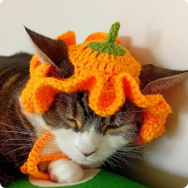
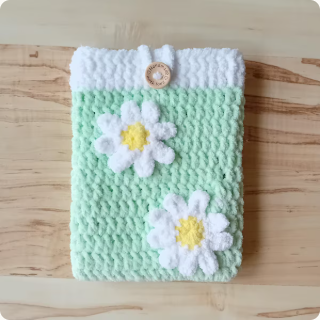
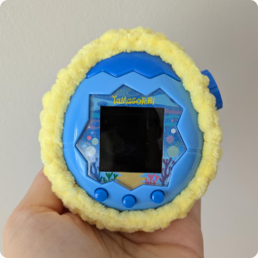
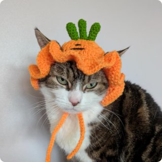

★★★★★
“The wool is so soft and it looks amazing on my Tamagotchi — would recommend <3”
Hooked, stitched & sent with care
Playful crochet for cats, gadgets and lovely people. Every piece is made by Cath in Newcastle upon Tyne.



Small-batch favourites
Made in small runs, so what’s here today may be gone tomorrow.
12 handmade pieces
Try another search, or ask Cath about a custom piece.

Meet the maker
I started with amigurumi eight years ago and never really put the hook down. Now I’m happiest turning soft yarn into tiny hats, cosy cases and colourful gifts.
Everything is made by me in Newcastle, usually with Lola nearby — patiently modelling, supervising, or sitting on the yarn.
Kind words
“The wool is so soft and it looks amazing on my Tamagotchi — would recommend <3”
“Really cute, well made and delivered on time!”
“Very adorable. Beautifully made, not too heavy. Thank you.”
Your idea, my hook
Tell me the idea, colours and who it’s for. I’ll reply with what’s possible, a rough price and timing before anything is agreed.
Standard cat hats are sized to fit Lola comfortably and also suit many small dogs. Add your pet’s head measurement to the order notes if you can; custom sizing is always welcome.
Hand washing in cool water is the gentlest option. Reshape while damp and dry flat. Some items can be machine washed, but handmade pieces stay lovelier for longer with a little extra care.
Ready-made items usually dispatch in 2–4 working days. Made-to-order and custom pieces take a little longer; the estimate is shown before purchase. Delivery times begin after dispatch.
Contact Cath within 24 hours and she’ll help where possible. Custom work cannot usually be cancelled once making has begun. See the full returns policy for details.